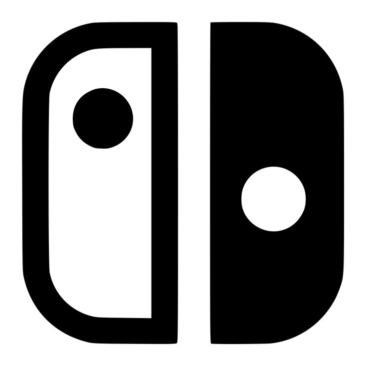
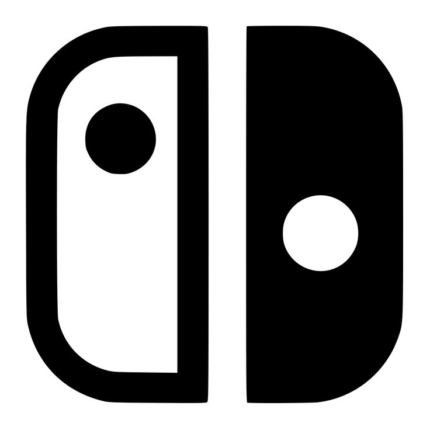

Stardew Valley é um jogo de simulação de vida onde o jogador herda uma fazenda decadente e precisa transformá-la em um próspero negócio agrícola. Além de cultivar plantas e cuidar de animais, o jogo permite explorar cavernas, minerar recursos e participar de eventos


Data de Lançamento: 26 de fevereiro de 2016
★ ★ ★ ★ ★Plataformas:


 

Classificação de Idade:

The Sims 4 é um jogo de simulação de vida onde os jogadores podem criar e controlar personagens virtuais chamados "Sims". Os jogadores podem construir casas, desenvolver relacionamentos, seguir carreiras e explorar a vida cotidiana dos Sims em um ambiente aberto e interativo.


Data de Lançamento: 2 de setembro de 2014
Avaliação dos Jogadores:
★ ★ ★ ★ ☆Plataformas:
Recomendação de Idade:

BeamNG.drive é um simulador de direção realista que oferece uma experiência de condução detalhada e física avançada. O jogo permite aos jogadores explorar uma variedade de veículos e ambientes, com ênfase na simulação de danos e colisões realistas.


Data de Lançamento:29 de maio de 2015
Avaliação dos Jogadores:
★ ★ ★ ★ ☆Plataformas:
Recomendação de Idade: